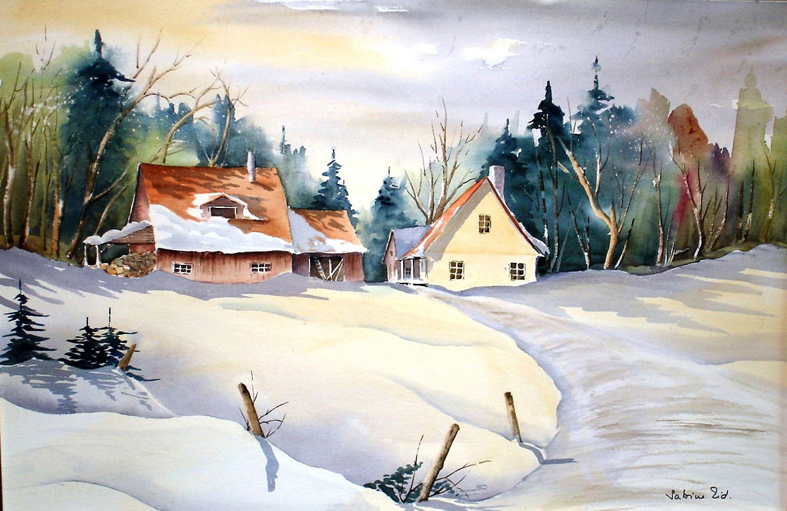

Notes de l'Artiste
Née en Belgique, mais demeurant au Québec depuis 1967, c’est à travers l’aquarelle que j'ai appris à connaître et à admirer les majestueux paysages de la province.
Inspirée par les campagnes de l’Estrie et les montagnes de Charlevoix, ma peinture cherche à traduire autant des scènes de neige chaleureuses que les couleurs vibrantes de l’automne.
www
Voici la page web de Sabine Martens Eid
Expositions
Dernières expositions
- Bromont -
- Bromont -
Prochaines expositions
- New York -
- Paris -
Principales oeuvres

Comparaison image versus graphic
